IO623 Usage Notes
IO623 Usage Notes — Usage information about the I/O module
Interrupt Setup
Introduction
The communication in a FlexRay cluster is facilitated by the TDMA method (Time Division Multiple Access). Each node has pre-defined time slots to send data packets. Each communication controller (CC) has an internal clock, which is synchronized over the FlexRay network. The clocks must be synchronized to avoid the frames of two nodes colliding.
The clock on which the Simulink model runs, however, is part of the target machine and is therefore not synchronized with the clock of the FlexRay CCs. To ensure a deterministic behavior, we must trigger the IO623 driver blocks using the IO623 CC1 interrupt, which is generated at the start of each communication cycle (see graphic below).
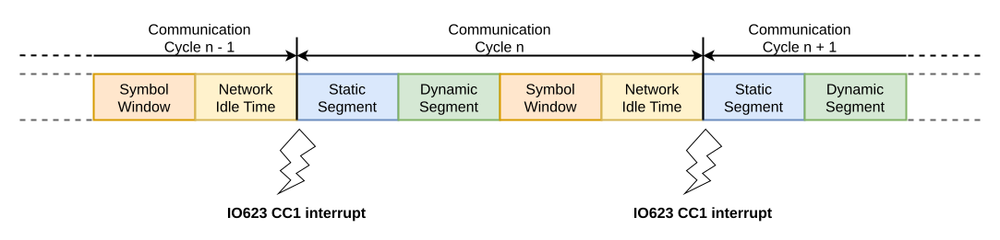
Currently, the interrupt is only generated by CC1. This means you will always need to configure CC1 and connect it to the FlexRay bus, even if your I/O module contains multiple CCs.
The Interrupt Setup block represents hardware interrupts from Speedgoat I/O modules. It is used to trigger an asynchronous subsystem or provide the pulse for a model base rate. Refer to the Interrupt Setup help page.
Run the following command in the MATLAB command window:
speedgoatlib_interrupt
Drag and drop the Interrupt block to your model. Alternatively, you can find the Interrupt Setup block by entering speedgoatlib in the MATLAB command window, and then navigating to Tools & Utilities > Utilities. Double click the Interrupt Setup block, and then select Speedgoat IO623 Interrupt in the Select Interrupt list (the IO623 Setup block must be in your model). Select the corresponding Module ID, and then click Select, Apply, and OK.
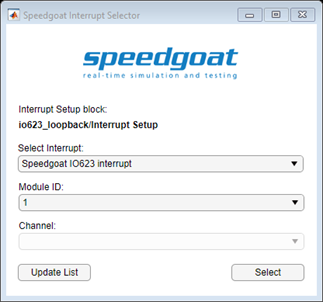
Pulse for model base rate
When using the model in the base rate, select the Use as model trigger option in the block mask.
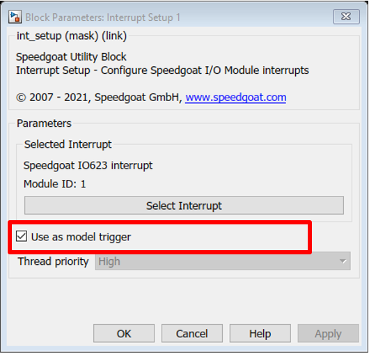
Triggering an asynchronous subsystem
When using an asynchronous subsystem, unselect the Use as model trigger option.
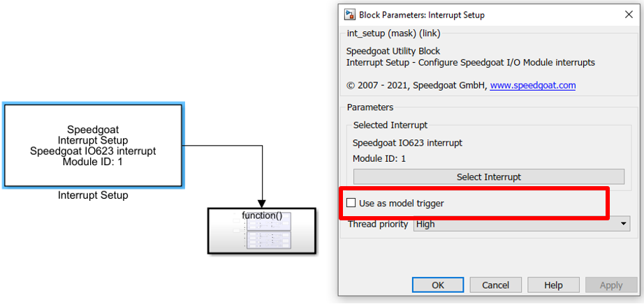
Move all the IO623 blocks inside a subsystem. Connect the output of the Interrupt Setup block to the trigger input on top of the subsystem.
LED Indicators on the Front Panel
Each FlexRay channel (A and B) on the front panel has two LED indicators for signaling different monitoring states: Red and green. If no LED is lit, then no CC is installed at the corresponding connector or no bus activity is detected. The LED states are explained in the following table:
| Signal | Description |
|---|---|
| Green flashing | Indicates that the FlexRay CC is in a startup state (meaning that the FlexRay CC is ready for synchronization). Green flashing occurs when monitoring in normal mode and the FlexRay configuration is incorrect or no cable is connected. |
| Green light | FlexRay CC is synchronized with the network. The intensity of the LED depends on the traffic on the bus. |
| Red and green lights at the same time | FlexRay CC is not synchronized but is connected to an actively working network. Bus traffic is detected. This LED combination is active when monitoring in asynchronous mode, which is not yet supported. The intensity of the LEDs depends on the traffic on the bus. |
| Red flashing | Indicates an error with the FlexRay CC (e.g. clock correction errors). The CC changes state and stops the reception and transmission of FlexRay frames. Restart the Simulink model to reset the CC. |
| Permanent red light on all LEDs | Indicates a buffer overflow on the internal RAM. Check your setup and the FlexRay configuration and restart the model. If the error persists, contact support@speedgoat.com. |
Configuration of FlexRay Controller using FIBEX File
A configuration file, namely a CHI file, is required for every CC on your IO623 I/O module. CHI files define all the necessary FlexRay parameters for the CC to connect to (or start up) a FlexRay cluster and send and receive frames.
With our CHI Generator Tool you can load a FIBEX file, which contains the configuration for a whole FlexRay network, and export the CHI files for the different CCs. You can download the CHI Generator from the Speedgoat Customer Portal.
Also, part of the CHI file is the receive and transmit buffer configuration. A message buffer RAM with 2048 32-bit words is available for the creation of these buffers. Each message buffer uses 16-byte administrative data. The remaining space can be used for the payload. This leads for example to a maximum configuration of 30 message buffers with a 254-byte payload, 56 message buffers with a 128-byte payload or 128 message buffers with a 48-byte payload. The maximum number of message buffers is 128.
Every frame that needs to be sent by the CC requires a transmit buffer to hold the data until it is ready to be sent. The data written to the IO623 Send blocks will be written directly into these buffers for optimal performance. For the receive functionality, the buffer configuration is less critical. You can specify dedicated buffers to receive specific frames. Unused message buffers will be configured as general-purpose receive buffers which can receive frames from any slot (the driver requires at least a few of these general-purpose buffers to be present). The frames received will then be buffered in a 2 MB SRAM. This allows you to receive all frames during a FlexRay cycle.
Speedgoat CHI Generator - User Manual
Introduction
The Speedgoat CHI Generator is exclusively used to create RBS CHI files for the IO623 Setup block.
The Speedgoat CHI Generator configures the CC based on the FIBEX database. It is an intuitive tool to generate RBS CHI files based on FIBEX files. The special characteristic is that the files help to stimulate one or more Electrical Control Units (ECUs) from the FIBEX file. That means that the CC is configured to send all messages received by the ECU (Device Under Test DUT). Message dependencies to other DUTs are resolved and considered. Furthermore, the user has the option to switch off individual frames and add additional frames. Consequently, an adaptation of the RBS CHI files for changed development levels is clean.
Main Features:
Select one or more FIBEX DUT
Select the DUT whose messages should be sent at any rate
Switch off and on individual frames
Add additional frames
Generate several RBS Controllers for load sharing and synchronization
Add Sync messages if it is necessary
Support FIBEX versions: 1.2.0a, 2.0.0d, 2.0.1, 3.0.0, 3.1.0, 4.0.0, 4.1.0, 4.1.2
Control FIBEX data including schema validation and additional rules
Support CC for the CHI file
Bosch E-Ray
FreeScale MFR4200, MFR4300, MFR4310, MPC5567
Fujitsu MB88121, MB91F465X
NEC V850E/PH03
Automatic message buffer mapping
System Requirements:
Microsoft Windows 10 (32-bit or 64-bit)
Minimum disk space 30 MB
Internet Explorer 6.0 or higher
Windows Installer 4.5 or higher
Microsoft .NET Framework 4.7.2 (To run the application the Microsoft .NET Framework is necessary. Please visit the Microsoft homepage for requisites and download)
Installation
To install the Speedgoat CHI Generator, the Speedgoat_CHI_Generator_32Bit.msi or Speedgoat_CHI_Generator_64Bit.msi packages are required. Use the correct installation package for the operating system (the 32-bit package will not work on a 64-bit operating system and vice versa). Start the installation by double-clicking the installation package and follow the installation wizard instructions.
Start Speedgoat CHI Generator
Start the application by clicking the [Start] button from the Windows taskbar and then selecting StarCooperation -> Speedgoat CHI Generator -> Speedgoat CHI Generator.
To run the Speedgoat CHI Generator, a license per PC and person is needed. Then on the first start of the Speedgoat CHI Generator, the following window is shown.
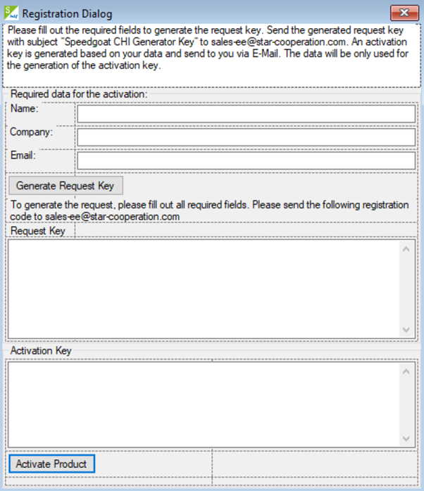
Please fill out your name, company, and email address. Then click “Generate Request Key”. Copy the generated code into an email and send it to sales-ee@star-cooperation.com. (You can close the dialog box by clicking on the X-button.)
After the personal registration key is generated, it will be sent to you by email. When you start the application, the registration window is shown again. Copy the registration key into the Activation key text field and then click on the “Activate Product” button. The Speedgoat CHI Generator main window will now display.
Speedgoat CHI Generator GUI overview
The most important options are described.
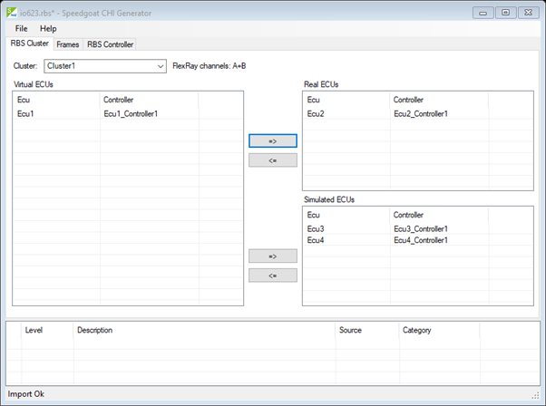
File menu:
Import FIBEX: open FIBEX files (.xml)
Load RBS: open RBS files (.rbs)
Speedgoat CHI Generator can start from Command Prompt and open an RBS or FIBEX file.
Navigate to the installation path (e.g. cd “C:\Program Files\StarCooperation\Speedgoat CHI Generator”), to open the file with path c:\files\myProject.rbs type in the Command Prompt: ChiGenerator4Rbs.exe c:\files\myProject.rbs
A relative file path is also supported: ChiGenerator4Rbs.exe ..\..\..\myProject.rbs
When the path contains spaces (e.g. c:\My Documents\fibex.xml), enclose the file path with quotation marks: ChiGenerator4Rbs.exe “c:\My Documents\fibex.xml”
RBS Cluster tab:
Cluster drop-down box: Select one of the FIBEX file clusters. The FlexRay channels used (A, B or, A + B) of the selected cluster are shown on the right of the drop-down box
Virtual ECUs window list: Contains all ECUs of the selected cluster. After the import of a FIBEX file, all ECUs are virtual. This means the ECUs are not physically available on the bus. Only the frames which depend on a real (physical available) ECU are sent on the bus
Real ECUs window list: Contains all ECUs which are physically available on the bus -> DUT
=>, <= move buttons: The selected ECUs can be moved from the Virtual ECUs list to the Real ECUs list and back. Similarly, the mouse can be used to drag and drop the ECUs between the lists
Simulated ECUs window list: Contains all ECUs which are not physically available but from which all Tx frames should be transmitted by the RBS
=>, <= move buttons: The selected ECUs can be moved from the Virtual ECUs list to the Simulated ECUs list and back. Similarly, the mouse can be used to drag and drop the ECUs between the lists
Frames tab:
The Frames tab shows the resulting RBS frames from the RBS Cluster configuration. The frame configuration gives the possibility to add or disable frames. If there are not enough sync or startup frames, an existing frame can be configured as a sync or startup frame, or new sync/startup frames can be added.
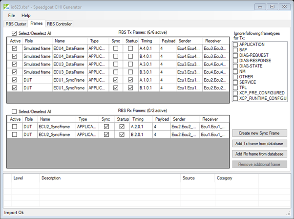
RBS Tx Frames window list: Show all frames which are transmitted (Tx) by the RBS
Select/Deselect All checkbox: Select or deselect all Tx Frames at once for this window list
RBS Rx Frames window list: Show all frames which are received (Rx) by the RBS
Select/Deselect All checkbox: Select or deselect all Rx Frames at once for this window list
The rows of the RBS Tx/Rx Frames window lists can be sorted by clicking on the column name header
Active checkboxes: The frames can be enabled and disabled by checking the corresponding box. Enabled frames are Tx on the bus and Rx in the buffers. Disabled frames are ignored
Role column: Show the role of the corresponding frame line. The roles can be:
Role Description DUT The frame is added to the RBS because of a real ECU (DUT). Simulated frame The frame is added to the RBS because of a simulated ECU. Additional database frame The frame is added to the RBS because of an extra added database frame. User generated startup/sync frame The frame is added to the RBS because it is a newly generated RBS frame. Name column: Show the name of the corresponding frame line
Type column: Show the type of the corresponding frame line
Sync checkboxes: By clicking the corresponding checkbox, the frame can be a sync frame or not
Startup checkboxes: By clicking the corresponding checkbox, the frame can be a startup frame or not
![[Important]](images/important.png)
Important Take care when editing the Sync and Startup in the RBS Rx frames window. The Rx frames are sent by the DUTs and cannot be reconfigured by the RBS. But if an obsolete FIBEX database is used, which contains a frame that is now transmitted by a sync or startup frame, the RBS can consider this.
Timing column: Show the timing of the corresponding frame line in the format: [Channel].[Slot].[base cycle].[cycle repetition]
Payload column: Show the payload of the corresponding frame line
Sender column: Show the original sender of the corresponding frame line in the format: [ECU Name].[Controller Name] The original senders are separated by “;”
Receiver column: Show the receiver of the corresponding frame line in the format: [ECU Name].[Controller Name]. The receivers are separated by “;”
Ignore following frame types for Tx checkboxes: Frame type filter for special frames. By marking one or several checkboxes, the selected frame type can be excluded from the RBS
Create new Sync Frame button: New sync or startup frame can be created and added to the RBS Tx frames in the Create new frame window
Create new frame window:
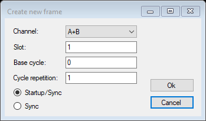
Channel drop-box: Select the channel on which the new frame should be sent. Only channels that are available for the cluster can be selected
Slot text box: The slot to send the frame in
Base cycle text box: The base cycle to send the frame
Cycle repetition text box: The cycle repetition with which to send the frame
Startup/Sync and Sync option buttons: Configure the frame as startup/sync or sync frame
Ok and Cancel buttons: Confirm or cancel the dialog. If the dialog is closed by using the Ok button, the configured frame is added as User generated startup/sync frame to the RBS Tx frames
Add Tx frame from database and Add Rx frame from database buttons: In the Select frames window, add additional frames to the RBS Tx/Rx frame from the FIBEX database
Select frames window: The selected frames are added as additional database frames when the dialog is closed using the Ok button
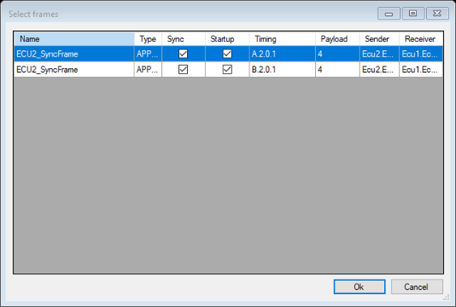
Remove additional frame button: The selected “additional database” or “new generated startup/sync” frames in the TX or Rx list are removed
RBS Controller tab:
The RBS Controller tab shows the controller in the configured frames when the RBS to send and receive is used
Every time the tab is clicked, the Select hardware window pops up to select and configure the RBS hardware. If the RBS hardware was already selected, the Select hardware window contains the configuration settings indicated immediately below.
Select hardware window:
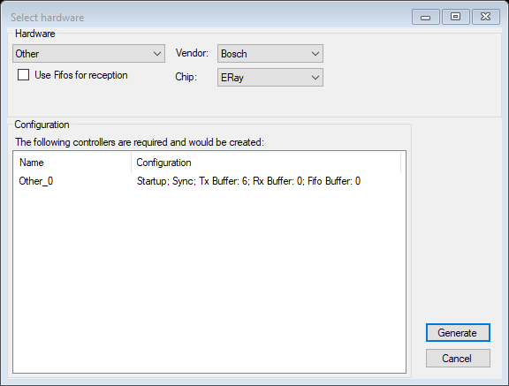
Drop-down box: The hardware option StarElectronics hardware (with CC vendor and chip presets) is used for the RBS. The hardware option Other allow users to specify their own hardware (vendor/chip combinations; but only supported CCs can be selected)
Use Fifos for reception checkbox: Configure the CCs to use first-in, first-out (FIFO) buffers for the reception. If the checkbox is selected, 4 FIFO buffers will be created
Vendor drop-down box (only enabled if Other in the Hardware drop-down box is selected): Select the CC vendor. Only supported vendors are available for selection
Chip drop-down box (only enabled if Other in the Hardware drop-down box is selected): Select the CC chip. Only chips for the supported selected vendor are displayed
Configuration The following controllers are required and would be created window list: Show how many RBS controllers will be created and which configuration they will have. The following configurations are shown: Startup and sync flag when configured. The number of Tx buffers. The number of Rx buffers. The number of FIFO buffers
Generate button: Confirm or cancel the Select hardware window. If the window is closed by using this button, the configured settings are created and used for the RBS to generate the RBS CHI files
RBS controller tab overview:
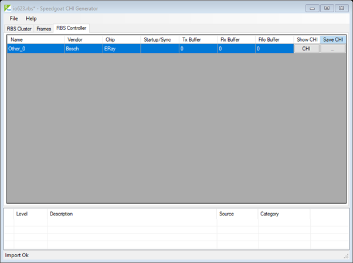
Name column: Show the name of the generated RBS controller. The name is generated in this format: [hardware type]_[number]
Vendor column: Show the CC vendor
Chip column: Show the CC chip
Startup/Sync column: Contains the configured startup and sync flags
Tx Buffer column: Shows the count of Tx buffers generated for the RBS controller
Rx Buffer column: Shows the count of Rx buffers generated for the RBS controller
Fifo Buffer column: Shows the count of FIFO buffers generated for the RBS controller
Show CHI buttons column: Shows the generated CHI of the controller in the CHI window
CHI window: Shows the CHI of the corresponding RBS controller. The CHI can be saved as a CHI file using the Save button
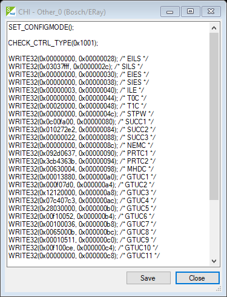
Save CHI buttons column: The corresponding button saves the generated CHI of the controller as a CHI file